Bakugan Project - Klepto's Early Access Analysis
Published on October 27, 2023 written by JoGa Hazard 17 published by Tom
This document is meant to highlight all of the important gameplay aspects shown and/or
mentioned in Klepto’s Early Access Streams on 10/23-10/25. Keep in mind to take everything
listed here with a grain of salt, that anything listed here is subject to change and is not set in
stone, and that this list is also purely based on what is done or heard from the Webmasters in the
stream. This is SOLELY OBSERVATION. Bugs will also not be listed, as many of those are
currently getting looked at and fixed. Thanks again to Klepto for streaming the gameplay!
Beginning of Game
When the game boots up, the intro sequence from the first episode of Bakugan Battle
Brawlers will play before directing you to a login screen
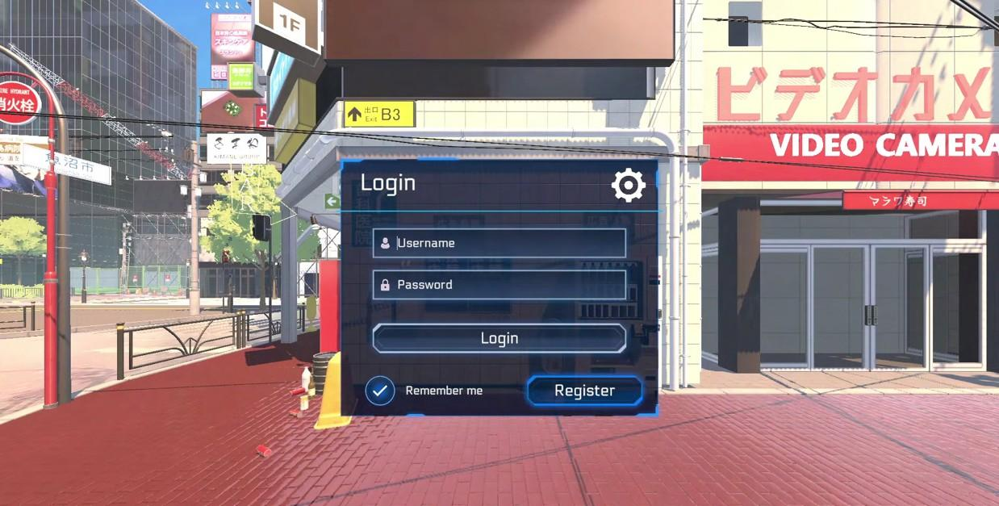
[Logging in to Bakugan Project.]
There are username and password protected accounts, and you will be asked to create one when you boot up the game for the first time.
You can create multiple accounts.
After creating an account, you will create your character, choosing hairstyles, tops, bottoms, and shoes, as well as changing your character’s eye shape, name, and skin tone. In the bottom right corner, there will be an Attribute Wheel, which you will use to select your primary Attribute before continuing.
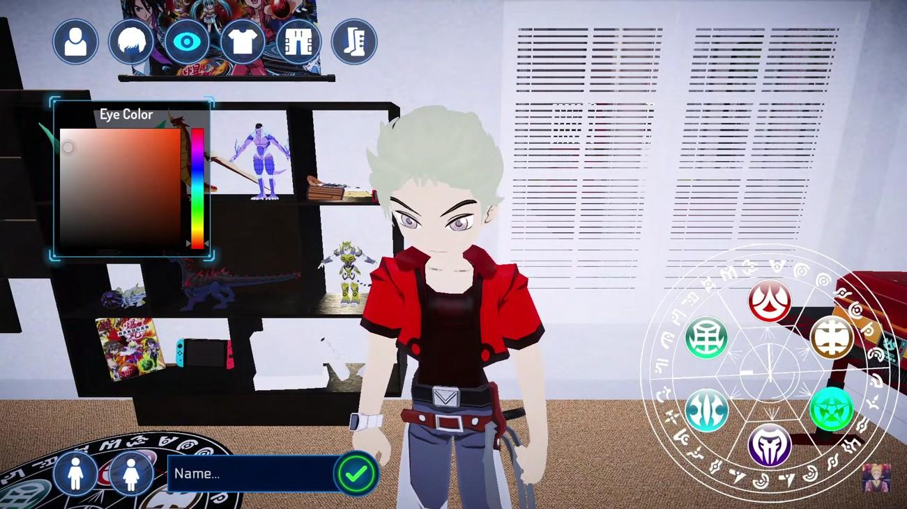
[Character Customization.]
When you check everything off, you will be given three random Bakugan of your chosen Attribute on the screen (At the moment, no G-Powers included). All three will be different species from each other. You will be asked to select one of them. You will do this process three different times, and all nine Bakugan you see total will be different from one another. The three you select will be your starting Bakugan. Their base G-Powers will also most likely be lower than what they would be if purchased from the shop.
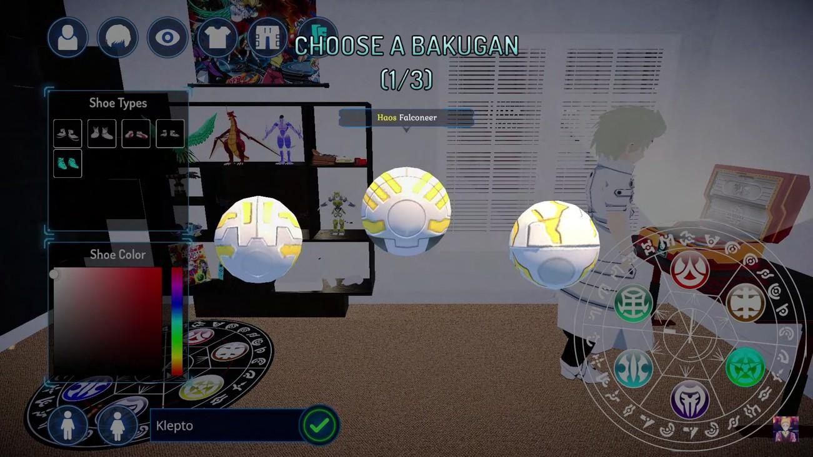
[Klepto gets a choice between Haos Robotallion, Falconeer, and Fear Ripper.]
You will also choose one Command Card between three random cards, as well as one Character Card based on the Bakugan you chose
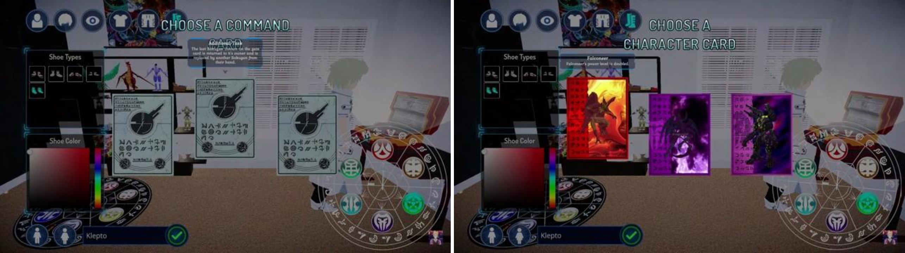
[Because Kelpto chose Falconeer, Reaper, and Laserman, they get to take one of their character cards, which doubles the G-Power of that specific Bakugan.]
In addition, you will also receive three Normal Gate Cards for your Attribute, with +30, +50, and +70 bonuses respectively
You will also be given ten ability cards, although it is uncertain how these abilities are chosen. Some will be based on the Bakugan species that you selected at the beginning of the game.
A Deck contains ten Ability Cards and five Gate Cards, although it is uncertain if there are certain restrictions on card type. You must have all slots filled out to battle.
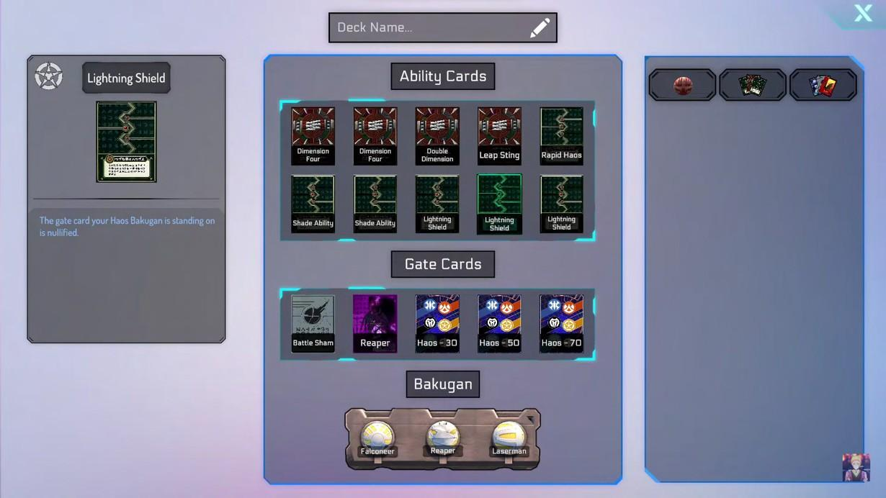
[Klepto’s Haos Deck. They chose Laserman and Reaper, so their abilities were given to Klepto in their Starter Deck.]
Gameplay
After a game is played, you will be shown a screen with either “VICTORY” or “DEFEAT”, as well as your HSP gain, as well as rank, rank change, points(?), wins/losses, turn numbers, and time elapsed.
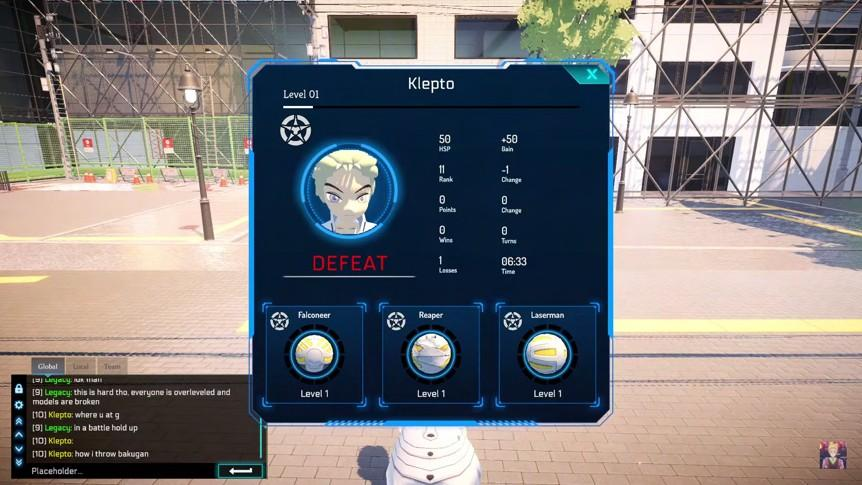
[Klepto’s defeat screen.]
Double battles (2v2s) are indeed possible with and/or against other players (and are a lot of fun).
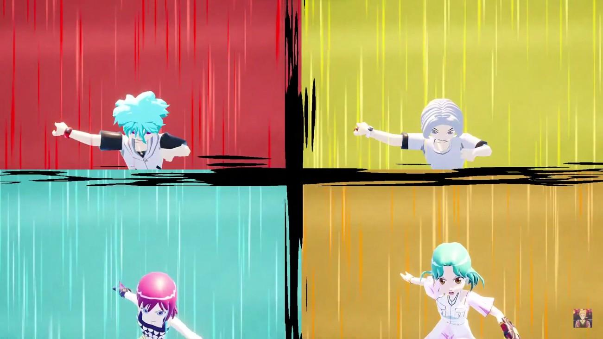
[Klepto and June do a tag battle against Jenny and Jewels.]
Two Bakugan from one team standing on the same Gate Card without initiating battle IS ALLOWED in this game, no card effect or ability necessary. I believe this will add a lot more in terms of strategy and make things very interesting. This was done during the show a couple of times, but it was very rare, so many people thought it was against the rules (See picture below for what I mean by this).
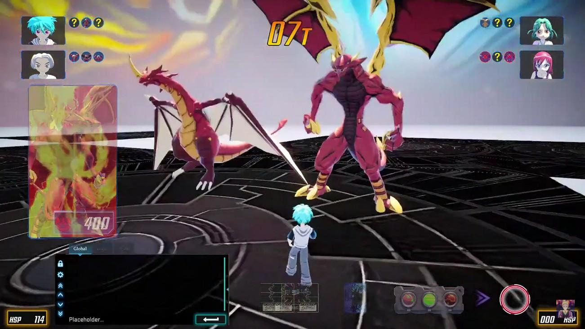
[Klepto’s Dragonoid and June’s Leonidas, stood on a Gate Card without the use of effects or abilities.]
It seems that every player draws an ability card from their Deck at the beginning of every fifth turn (you will draw at the beginning of T5, T10, T15, T20, T25, and so on). Gate Cards do not seem to be drawn, as three Gate Cards from the five in your Deck seem to be selected at random to play the game with.
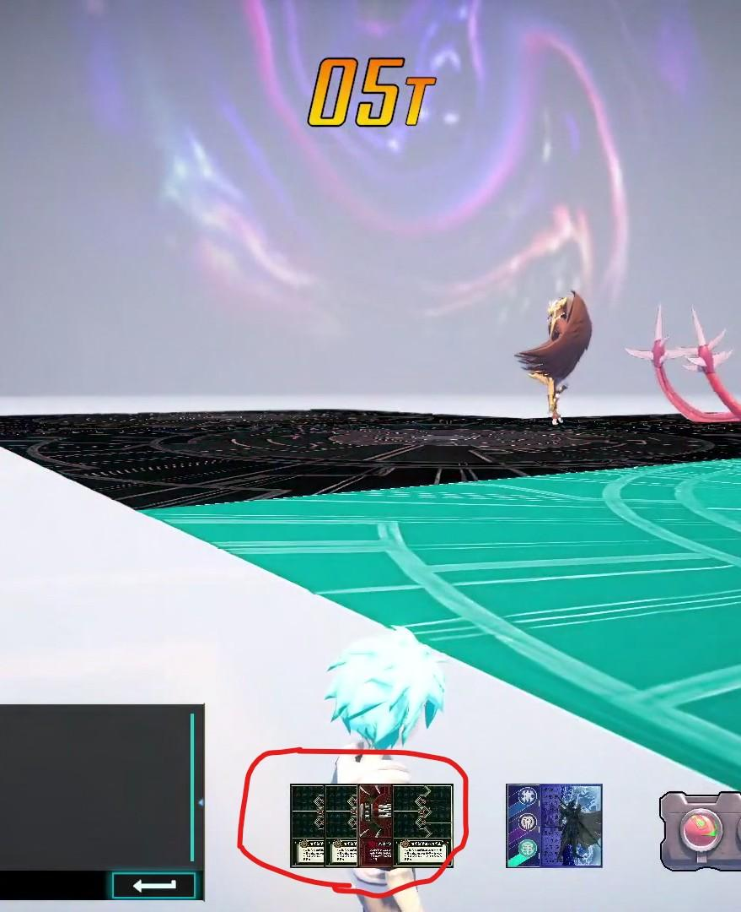
[Since it is the beginning of Turn 5, Klepto draws an ability card from their Deck.]
You can walk around the battlefield during battle with your character.
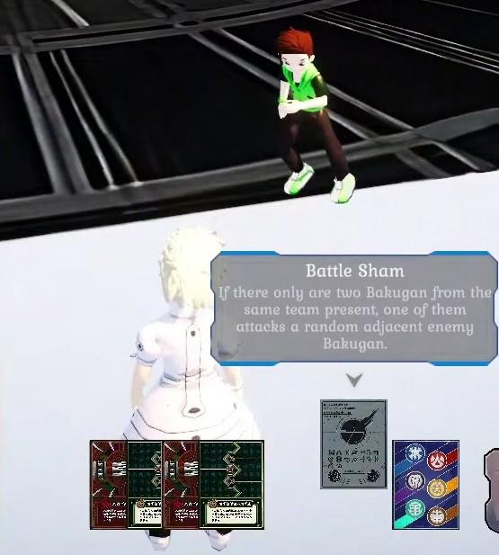
[Legacy running around Klepto during battle.]
Abilities activate in chain links, similar to Yu-Gi-Oh. When someone activates an ability, both teams will go back and forth activating their abilities. Then, when both sides pass turn, the chain resolves backwards in the order of abilities activated (The most recently activated card will resolve first, the next second, etc, the same is true for Command Cards, as their activations will also be part of the chain). This is dictated at the top of the screen. However, if a NORMAL or CHARACTER Gate Card activates in the chain, its effect immediately resolves without waiting for the chain to finish accumulating activations. (This process is subject to change).
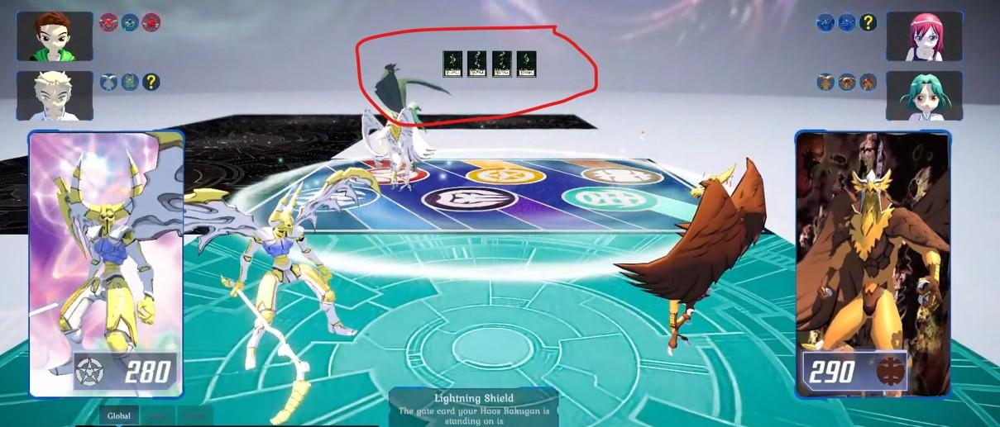
[The card on the right is the most recently activated, so it will resolve first.]
It seems that if you are in the vicinity of a battle that is just starting and that you are not a part of yourself, you will still be able to view the battle and enter the battle space.
There are no draw battles. If two Bakugan battle and end up at the same G-Power when both players are done activating cards, the Bakugan who stood on the Gate Card first wins the battle automatically,preventing a tie.
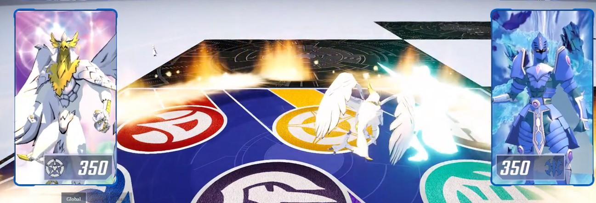
[Both Bakugan are at 350 Gs. However, Klepto’s Falconeer stood on this card first, so it automatically wins.]
If all the Bakugan everyone has are out on the field and a battle has not started, one of the Bakugan moves to the Gate Card with an opponent’s Bakugan on it, although it is uncertain how it is decided which Bakugan will be battling and what Bakugan will be moving to what card (maybe something to do with turn order?).
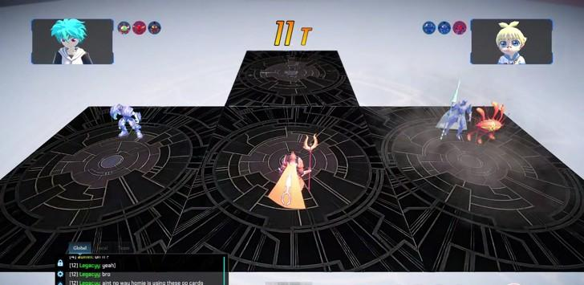
[Klepto’s Pyrus Tentaclear and Marucho’s Aquos Siege are forced to battle.]
Bakugan do indeed level up as you battle with them. It seems that after a Bakugan levels up, it gains +10Gs to its base G-Power.
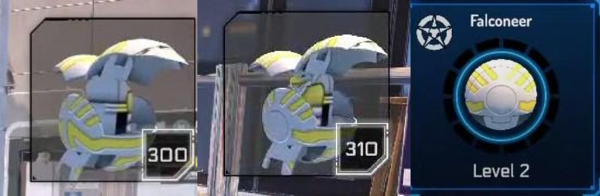
[Klepto’s Level 1 and Level 2 Falconeer.]
You also have the option to set a Gate Card on the field AFTER you roll a Bakugan, as long as you hadn’t already set a Gate Card that turn. You also have this option even if you have no Bakugan left to roll, so your turn is not automatically skipped if you have no Bakugan to play.
Some Command Cards activate right when 2 Bakugan stand onto it (although it is unclear what dictates which do and which don’t).
So far, the max amount of a specific ability card you are allowed to have in your Deck is three. Unsure if it goes any higher, but that was the highest shown on stream.
According to the Webmasters in the stream, the BakuShop will give you a random set of Bakugan and cards to purchase from. According to what has been stated on stream, the shop will rotate when something is purchased, OR periodically over time if nothing is bought (although it is uncertain how long it takes for a shop reset to occur on its own).
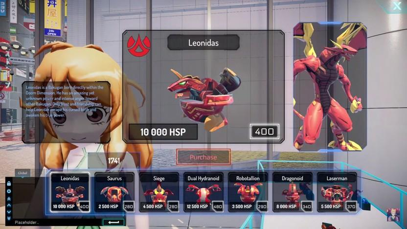
[The Pyrus section of the Bakugan Shop.]
CPU Bakugan also seem to have a leveling system and will increase in G-Power as they battle, although it is uncertain if this was done by intention or not, or if its permanent.
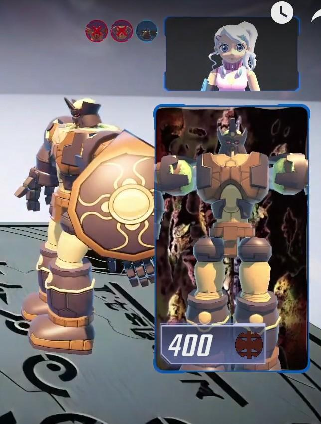
[After Klepto’s many battles with Julie, her Gorem is now Level 3 (380Gs → 400Gs).]
At the moment, a maximum of ten Gate Cards can be set on the field at a time (specifically, in a formation of two rows and five columns).
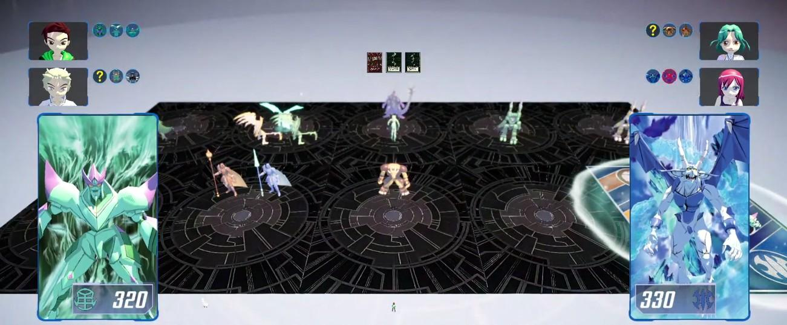
[Ten gate Cards set on the field at once during a tag battle.]
Diagonal Relationship ability boosts are permanent for the Bakugan not involved in the ongoing battle, so a Bakugan not in battle that was used for a single or multiple activations of a Diagonal Relationship will keep all the Gs it gains until it is returned to hand.
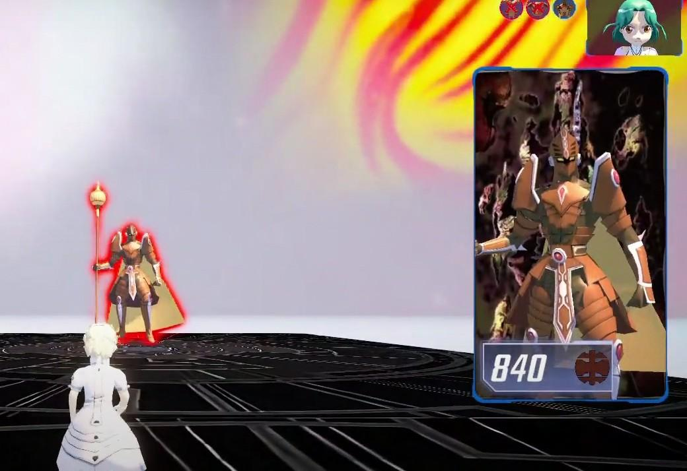
[A Subterra Siege boosted by countless Diagonal Relationship Abilities without engaging in battle.]
There is a timer length for you to conduct your roll and pre-battle abilities at the beginning of your turn, as well as a timer during battle that resets after an action is performed. The length of time has yet to be set into stone.
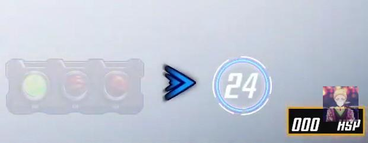
[A beginning of turn timer, along with a BakuClip and the button to pass turn (as well as Klepto’s Youtube Icon, unrelated to the game).]